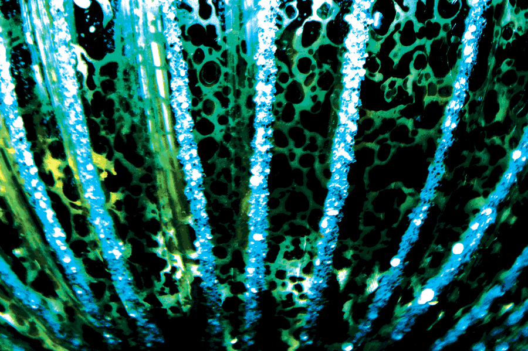
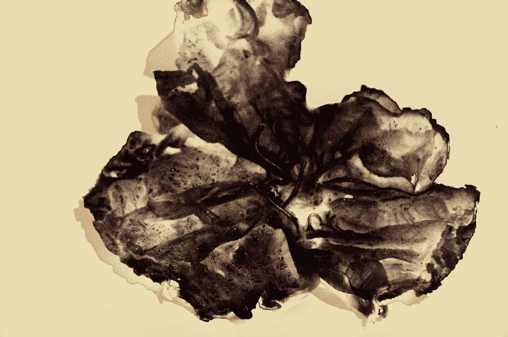
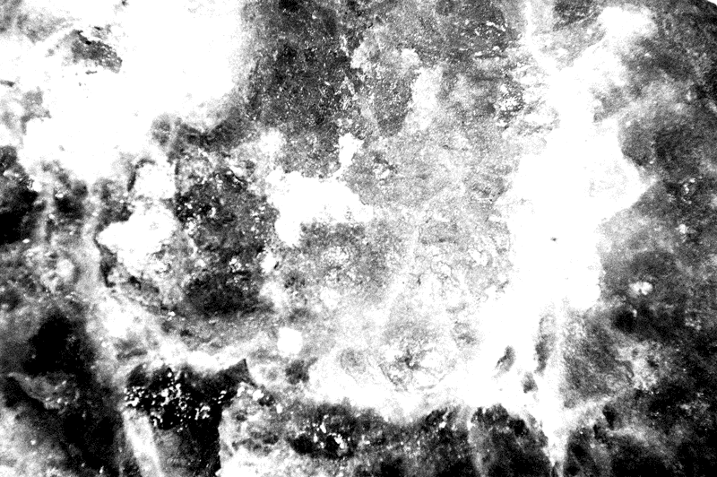
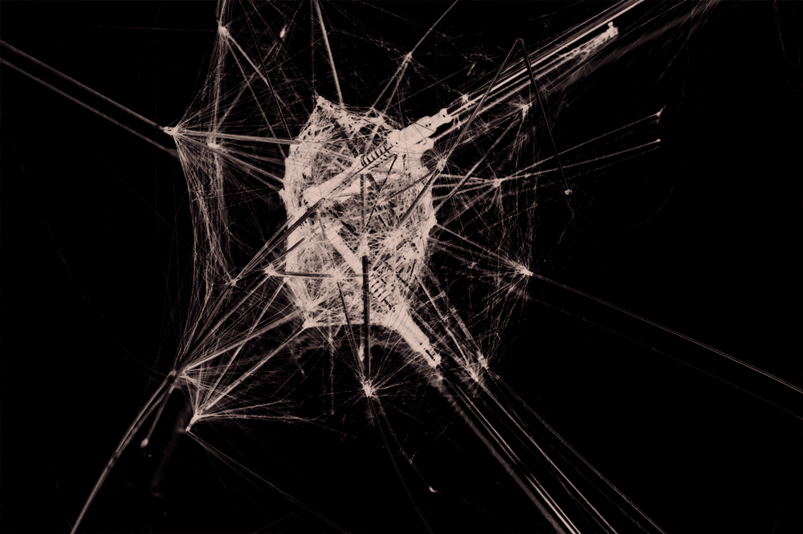
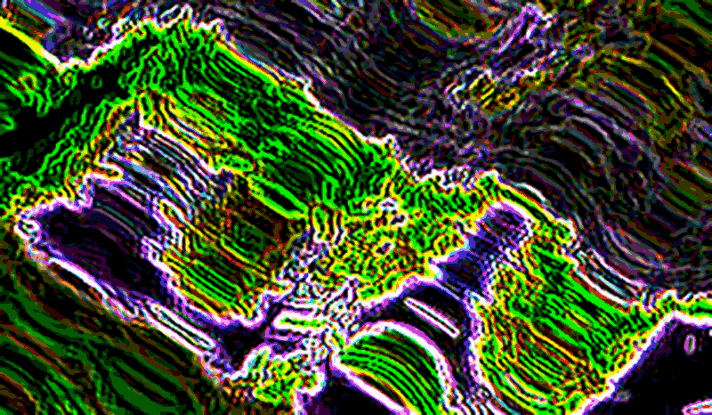
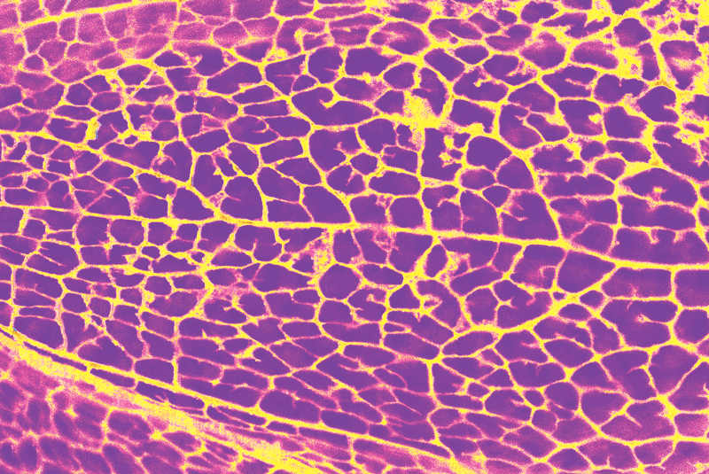

☺
Projets
Contact
CV
     
Photographies macro d'objets divers puis photoshopés dans le but de se rapprocher au plus de photographies scientifiques.
Varied object's macro photographs that seem like scientific photographs.